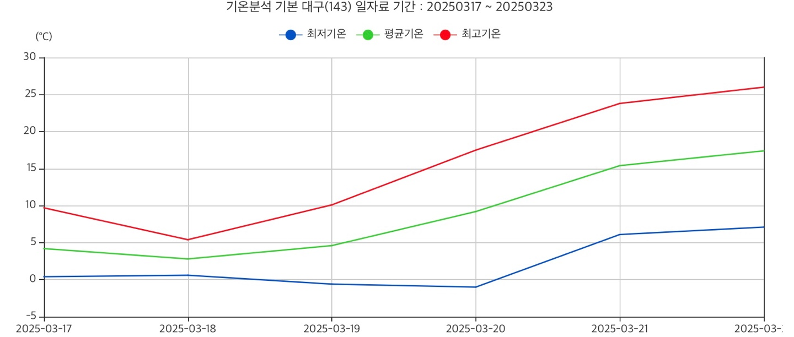

대구광역시
3/17~3/22
기온 분석

출처:기상청 기상자료개방포털
날짜
평균기온
최저기온
최고기온
3/17
4.2°
0.4°
9.7°
3/18
2.8°
0.6°
5.4°
3/19
4.6°
-0.6°
10.1°
3/20
9.2°
-1°
17.5°
3/21
15.4°
6.1°
23.8°
3/22
17.4°
7.1°
26°
3월 20일부터 최고기온
17°
이상을 기록하며 완연한 봄날씨가 됐다
알아두면 쓸모 있는 봄철 주의 사항!
봄에는 진드기의 위험성이 커진다
봄은 일교차가 크고 공기가 건조해 감기에 걸리기 쉽다
봄은 꽃가루 등으로 인해 각종 눈 질환에 걸릴 수 있다
봄은 강수량이 적고 기온이 높아서 산불 위험이 높다